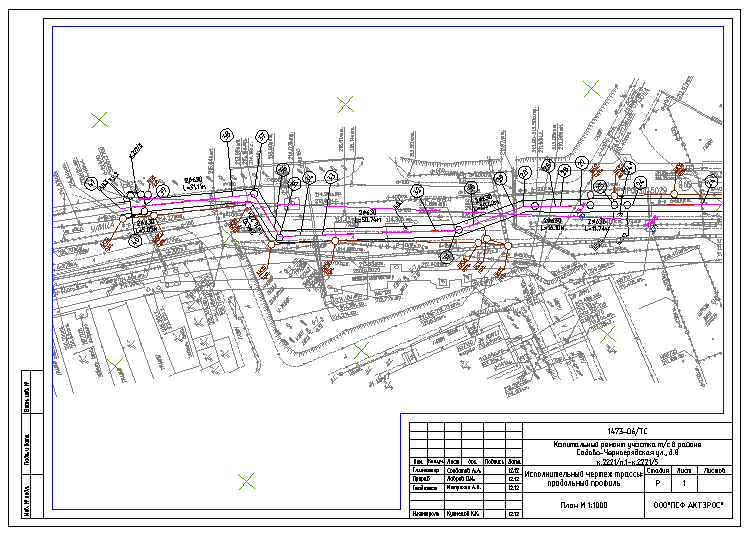

Дано: есть съемка как правило в виде трассы (линейная) как правило с изгибами и не вдоль X или Y а как раз по диагонали к тому же изгибается. Именно такого под рукой не оказалось поэтому показывать буду на том что есть:
Надо: оформить документацию по трассе разбив на листы. Дополнительно сдвигать и резать трассу не будем так как теряются координаты, а в случае с моделью рельефа вообще подобно катастрофе. (Есно можно все взорвать, но когда внезапно понадобиться «чуть-чуть подправить» на заключительной стадии будет кисло).
Итак оформление трассы можно разделить на три этапа для каждого используется своя кнопка.
1. Штамп. Использую три вида штампа: ГОСТ 21-101-97 Форма 3, «Большой» и «Маленький». Данные штампа хранятся в файле .sht и используются для подстановки в нужные места всех штампов.
На практике это выглядит так: команда Штамп редактор открывает текущие данные штампа если запуск происходит первый раз открывается файл по умолчанию [blank] там вбиты какие то древние данные которые нужно отредактировать. Чтобы каждый раз не менять фамилию например главного инженера можно пересохранить файл blank, он находится по пути C:\Documents and Settings\<имя пользователя>\Application Data\geo_tools\template\blank.sht Так выглядит окно программы и соответствующий ей тип штампа «Большой»
Меняем стандартные данные на свои, чтобы посмотреть как они отобразятся в других штампах есть соответсвующие кнопки ГОСТ
и «Маленький».
Небольшое замечание: если в штампах с номером листа перед цифрой поставить знак # то после каждой вставки штампа это число будет увеличиваться на единицу.
Поменяли нажали OK или Сохранить, будет предложено сохранить файл с расширением .sht по умолчанию название файла такое же как текущий чертеж и предложено сохранить туда же где текущий чертеж находится. Если текущий чертеж еще ни разу не был сохранен будет предложена системная папка Мои документы. Путь расположения этого sht файла будет записан в чертеже и использоваться при вставке штампов. Если надо вставить штамп отдельно есть кнопки "Вставить штамп ГОСТ", "Вставить штамп Большой", "Вставить штамп Маленький".
2. Формат листа. В зависимости от конфигурации, размера и масштаба надо вписать объект в лист(ы) определенного формата. Для этого существует кнопка Менеджер форматов которая позволяет вставить в чертеж формат нужного размера в соответствии с текущем масштабом аннотаций.
В правой части можно выбрать тип штампа вставляемого вместе с форматом листа. Галочка Поворот позволяет повернуть указанный формат на 90 градусов (ширина и высота поменяются местами). Галочка Вставка штампа с инв.№ добавляет в левый нижний угол формата маленький штампик с графами посвящёнными инвентарным номерам. И последняя галочка самая интересная Без вспомогательных рамок. При работе в листе никакой разницы не играет. В модели:
Галочка поставлена – никаких отличий от работе в листе, вставляется рамка указанного формата с штампом (если указан).
Галочка не поставлена – вставляется вспомогательная рамка указанного листа в которой утолщенной линией показывает внутреннюю границу листа с учетом штампа(если указан) и тонкой линией отступ от этой границы внутрь листа на 5мм в масштабе.
С помощью вспомогательных рамок трасса разбивается на листы. При вставке вспомогательной рамки предполагается что она может быть повернута. Результат будет выглядеть примерно так:
3. Автоматическое оформление листов. Должным образом выполненные первые два пункта позволяют автоматически генерировать листы с рамкой, штампом и видовым экраном в нужном масштабе и повернутым изображением.
При активации программа в командной строке сообщит текущие настройки их всего две:
Вернуться в модель – Да/Нет – действие перехода в модель после созлания листа рамки штампа и видового экрана
Тип вставляемого штампа – Авто/ГОСТ/Большой/Маленький – при первом варианте тип штампа берется с блока вспомогательной рамки в остальных принудительно устанавливается указаный.
Будет предложено ввести название создаваемого листа. По умолчанию имя Лист1 если такой есть к цифре будет прибавляться единица. Выбор Настройки позволит переопределить перечисленные выше настройки.
Приглашение выбрать блок вспомогательной рамки
После выбора создается лист с указанным именем в него вставляется рамка формата, штамп (если указан) и полигональный видовой экран в определённом масштабе повернутый в соответствии с вспомогательной рамкой и границами по тонкой линии вспомогательной рамки. То есть примерно так:
В зависимости от настройки Вернуться в модель возвращаемся в модель чтобы еще раз кликнуть на кнопке и выбрать следующую вспомогательную рамку (имя листа автоматом прибавит единичку Например если было План1 при повторной активации по умолчанию именем листа будет План2) или остаемся в листе для до оформления текущего листа. Если листов много очень кстати придется # для автоматической нумерации листов в штампе.
Добавлю только то что сам часто пользуюсь первыми двумя пунктами. Программка третьего писалась скорее из «любви к искусству» чем по необходимости – давно не приходилось оформлять действительно длинный объект. Поэтому тестирование проводилось только в рамках… тестирования. В рабочих целях, по настоящему, не использовалась.
2012.11.13
{kind=link}
{kind=link}
{kind=link}
{kind=link}
{kind=link}